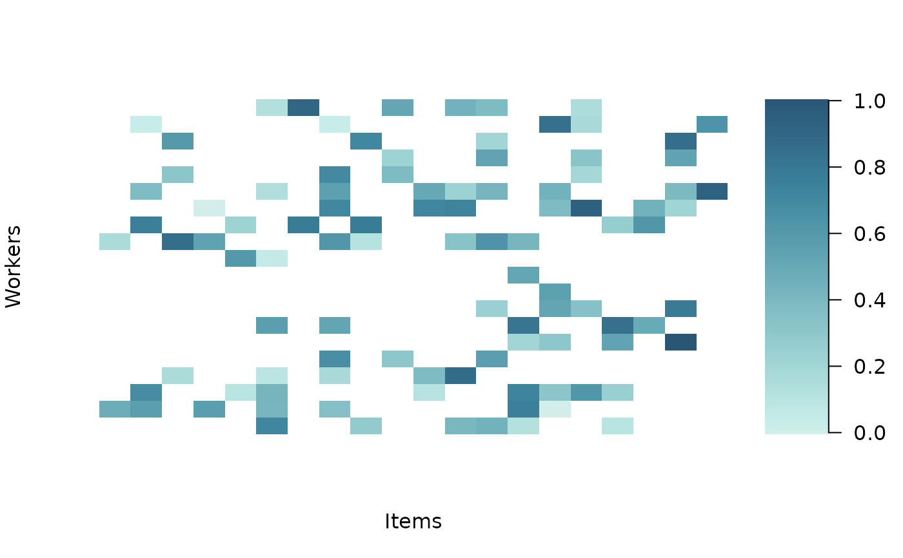

Plot a rating_data object
Usage
# S3 method for class 'rating_data'
plot(x, ...)Arguments
- x
A
rating_dataobject fromrating_data().- ...
Ignored.
Examples
# \donttest{
dt <- sim_data(J = 20, B = 5, AGREEMENT = 0.6,
ALPHA = rep(0, 20), DATA_TYPE = "continuous", SEED = 1)
rd <- rating_data(dt$rating, dt$id_item, dt$id_worker, VERBOSE = FALSE)
plot(rd)

# }